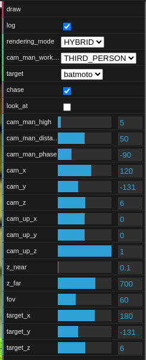
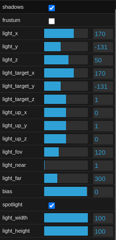
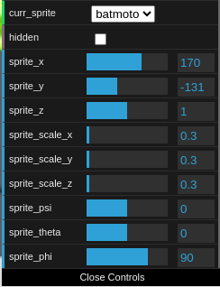

GLX is a small framework entirely developed by me under the following guidelines:
GLX has been used to develop GothamAPP, the main application of this project.
Please be aware that the application is still in its early stages and there are still many
things to be improved and added. Nevertheless, you can have a clear view on how GLX works and the potential
it has.
Gotham city is one of the fictional cities of the DC Comics Universe and has always been one of the most
wished destinations of the lovers of Batman, the famous super-hero who saved the world many times!
The aim of this simple application is to realize the dream of who wishes to visit and explore this
city,
being in the shoes of the amazing super-hero Batman.
Who does not wish to be Batman driving the BatMoto through the street of Gotham!?
 |
 |
|---|---|
 |
 |
The representation of Gotham has been developed as an
In addition, lots of decorations have been added inside the scene:
To conclude this fast overview, the scene has also
 |
 |
|---|
As mentioned above, GLX has been equipped with a single light source realized using WebGL, by putting
a
The scene is automatically updated each time the user set one of the available option,
but this mechanism will be clarified soon.
 |
 |
|---|
GLX allows the developer to define sprites: objects in the 3D world that have a position, a scale and a polar rotation. These objects can be transformed into the world thanks to geometrical operation (like translations, scales or rotations).
The main character of the scene is
Actually, all the original objects that compose Batmain have been bundled into one single
obj that is atomically used and managed from the application:
Anyway, in future developments it will be possible
to handle each parts separately: this will let to move the wheel as in real life.
In addition, it will be possible and reasonable to develop a mechanism of collisions handling with
the other objects of the scene.
The actual version of the application uses only a
By summaring, we have
To conclude, in the future it will be appropriated to add the physics of the movements that is
currently missed (the object simply move thanks to the interaction with the user, following some trivial
events that allows only to move back and forward and to rotate).
In line with the appliction's standard flow, Batman should be the only object capable of being
moved
through the interactions. Howevent, it is also possible to move the world - and also other objects that
can
be added - using the menu, while this functionality remains enabled. In fact, GLX provides a way to
select
and manage the active, and GothamAPP enables this feature in the graphical interface.
The user can interact with the application both on


The user can move the motorbike by using the following keys:
Instead, he can also use the mouse:
For the mobile version, the controls are the same of the mouse but with the touch instead of the click. By summarising, the motorbike can be moved:
|
|
|
|
|
|---|---|---|---|
|
|
Press ↑ | Click and move UP | Touch and move UP |
|
|
Press ↓ | Click and move DOWN | Touch and move DOWN |
|
|
Press ← | Click and move RIGHT | Touch and move RIGHT |
|
|
Press → | Click and move LEFT | Touch and move LEFT |
In addition to the controls with mouse, keyboard and touchscreen, the application is also provided with a
rich
To realize the menu I used the dat.gui library.
|  |  |  |
|---|
The menu is composed by multiple parts that offer lots of functionality to the user:
To conclude the user interaction, it's also important to say that the application has been provided with lots of log prints that can be inspected using the developer tools. As already said, the log can be disabled using the proper button on the menu.
We discussed the functionality this application offers to the user, but since this is a course of the degree of Computer Science Engineering, it's also important to give some details about the model and the implementation of the software. Moreover, until now I didn't give a clear separation between GLX and how GothamAPP uses it to realize the final system.
The requirements of the project are strict: only Javascript is allowed and only some libraries furnished by the teacher. I personally don't like many aspects of Javascript, starting from the absence of the types that can cause many confusions, making clean code harder to organize and understand. This is, indeed, one of the main reason why Typescript was invented.
Anyway, I couldn't use Typescript due to the requirements. Nevertheless, I decided to boost the use of Javascript by following a modern approach based on JSDoc typing and Typescript declaration file, as suggested in this article. As remark, typescript declaration file are used from eslint and the IDE (like Visual Studio Code) in order to perform type checking for the variables and the functions and show warnings. It means that they could be omitted or deleted and the project will continue to work normally, but their use is actually strongly suggested.
Moreover, I also decided to use an object-oriented approach when possible, since classes are part of Javascript since ES6 and an organization of the code by modules.
As I said, GLX attempts to be a reactive framework with principles coming from the functional
programming.
For this reason, one of the main concept that drives GLX is the concept of
The foundamental aspects are:
All the code about the signal framework can be found here:
signals.js.
The system has a global point of subscription and registration for the signals (the object
SIGNALS,
singleton instance of the class SignalBroker):
| Method | Description |
|---|---|
register<D>(signalName: string): SignalDescriptor<D>
|
Registers the signal and returns the SignalDescriptor, an object that
enables event firing
|
subscribe<D>(signalName: string, action: SignalConsumer<D>): SubscriptionToken
|
Subscribes to the signal specified by signalName, registering the action to
be invoked on event occurrence. Returns a token for unsubscription
|
unsubscribe(token: SubscriptionToken)
|
Cancels and removes the subscription associated with the given token
|
Without going into the details, it is easy to summarize the key point with the integration in the application:
Sprite instance is automatically attached to signal system and fires a
specific event
The composition of all the signalName of a GLX application is called application signal
workspace.
I will soon give a fast overview of the signals available in an application workspace.
Javascript provides a trivial logging system through the console object.
In order to provide a kind of complete logging system, I developed a pretty smmall and contained library to
log messages,
considering also logging levels.
All the code about the signal framework can be found here:
logjsx.js.
Using the library it's quietly easy: simply, you need to obtain an instance of the Logger
interface via
let logger = Logger.forName('myComponent');
Thanks to that, all the printed messages will be prefixed with the name of the component; moreover, you can
print messages with different logging levels: info, warning, debug
and error. You can call these methods on the logger instance.
The core components of GLX have been equipped with a Logger and prints some useful log that can
also
be disabled from the menu as shown.
GLX endeavors to provide a functional approach to define the geometry of the objects in the scene.
For this reason, I needed some classes to represent the different geometric entities that compose the scene
(for example
the position of the object).
To accomplish this purpose, I developed a small library whose code can be found here:
geometry.js.
The main entities of the libraries are:
| Class | Description |
|---|---|
Angle
|
Represents an angle with its unit (radians or degrees) |
Point3D
|
A cartesian 3D point in the space with three coordinates |
I also developed some builder function to easily create instances of these classes:
| Function | Description |
|---|---|
function angle(value: number, unit: AngleUnit): Angle
|
Creates and returns an angle with the given value and in the given unit |
function degrees(value: number): Angle
|
Creates and returns an angle considering the given value in degrees |
function point3D(x: number, y: number, z: number): Point3D
|
Creates and returns a point in the 3D world with the given coordinates |
function radians(value: number): Angle
|
Creates and returns an angle considering the given value in radians |
Please refers the typescript declaration file for additional details:
geometry.d.ts.
The model of the GLX framwork is placed into
glx-model.js.
This package contains classes that are used as model for the framework and they are perfectly
integrated with the signal system:
To reach this aim, almost all the model classes are equipped with a portion of the application signal
workspace that
they have to manage.
GLXSprite: represents a sprite
| Property | Fired signal | Data |
|---|---|---|
readonly name: string
|
||
readonly signalWorkspace: GLXSpriteSignalWorkspace
|
||
position: Point3D
|
GLX.[applicationName].[name].position
|
Change<Point3D>
|
rotation: Trio<Angle>
|
GLX.[applicationName].[name].rotation
|
Change<Trio<Angle>>
|
scale: Trio<number>
|
GLX.[applicationName].[name].scale
|
Change<Trio<number>>
|
hidden: boolean
|
GLX.[applicationName].[name].hidden
|
Change<boolean>
|
GLXCamera: represents the camera
| Property | Fired signal | Data |
|---|---|---|
fov: Angle
|
GLX.[applicationName].camera.fov
|
Change<Angle>
|
position: Point3D
|
GLX.[applicationName].camera.position
|
Change<Point3D>
|
targetPosition: Point3D
|
GLX.[applicationName].camera.target
|
Change<Point3D>
|
up: Trio<number>
|
GLX.[applicationName].camera.up
|
Change<Trio<number>>
|
zFar: number
|
GLX.[applicationName].camera.zfar
|
Change<number>
|
zNear: number
|
GLX.[applicationName].camera.znear
|
Change<number>
|
GLXShadowLight: represents the shadows and the lights
| Property | Fired signal | Data |
|---|---|---|
bias: number
|
GLX.[applicationName].shadowLight.bias
|
Change<number>
|
lightFar: number
|
GLX.[applicationName].shadowLight.far
|
Change<number>
|
lightFov: Angle
|
GLX.[applicationName].shadowLight.fov
|
Change<Angle>
|
lightFrustum: boolean
|
GLX.[applicationName].shadowLight.frustum
|
Change<boolean>
|
isShadowEnabled: boolean
|
GLX.[applicationName].shadowLight.shadowEnabled
|
Change<boolean>
|
isSpotlight: boolean
|
GLX.[applicationName].shadowLight.spotlight
|
Change<boolean>
|
lightDirection: Trio<number>
|
GLX.[applicationName].shadowLight.direction
|
Change<Trio<number>>
|
lightPosition: Point3D
|
GLX.[applicationName].shadowLight.position
|
Change<Point3D>
|
lightTarget: Point3D
|
GLX.[applicationName].shadowLight.target
|
Change<Point3D>
|
lightUp: Trio<number>
|
GLX.[applicationName].shadowLight.up
|
Change<Trio<number>>
|
lightNear: number
|
GLX.[applicationName].shadowLight.near
|
Change<number>
|
projectionHeight: number
|
GLX.[applicationName].shadowLight.projectionHeight
|
Change<number>
|
projectionWidth: number
|
GLX.[applicationName].shadowLight.projectionWidth
|
Change<number>
|
These classes are the most important of this package, but for further details please have a look to
glx-model.d.ts.
The core package is the most important of the GLX framweork and it defines
GLXCameraMan: the camera man that allow to realize business logic over
the camera an application is equipped toGLXDrawer: responsible for rendering and drawing the scene using
WebGL
GLXApplication: the main base class an application that wants to use GLX
has to inherit fromstart: the function that lets to boot a GLX application
You can find all the code at
glx-core.js.
GLXApplication class is a middleware that orchestrate all the components a GLX
application is equipped to and enable the controls through the signal system
The signal to control the application is GLX.[applicationName].gui_settings and the data
that is passed is:
type GLXControlInfo = {
readonly type: GLXControlType,
readonly value: any
}
You can find more details about GLXControlInfo at
glx-model.d.ts.
To create an application using GLX, the developer has to:
GLXApplication
main() method, the developer can also
provide further configuration (see
gotham.js)
start() with its application class and the params (like the canvas element name,
the name of the shaders, and so on...
While showing the menu of GothamApp, I spoke about rendering mode: the GLXDrawer indeed uses
WebGL to render the scene. But it has been developed with two rendering methods: renderLoop and renderScene.
Both methods are used to render the scene, but they have different purposes:
| Method | Description |
|---|---|
renderScene |
Render the scene at once, looking the state of the model classes of the application (camera, light, shadow, sprites) |
renderLoop |
Render the scene, and then schedule the next render realizing the render loop until the rendering
mode of the drawer is set to RenderingModes.HYBRID
|
So, there are two rendering modes in GLX:
| Rendering mode | Description |
|---|---|
RenderingModes.SIGNAL |
The drawer calculates the drawing matrices and renders the scene when |
RenderingModes.HYBRID |
The drawer |
Indeed, one of the main reason I decided to go through the implementation of a signal mechanism it's to try
to replace the render loop with something dynamic: a render called only by need.
In fact, the hybrid rendering mode seems to be winning: the computation of the WebGLX matrices is triggered only
when something effectively change, but the render is performed into a loop, avoiding loss of efficiency.
Anyway, this still leak of efficiency if the application does not change it's element so often: we have a continuous
loop even if nothing changes.

By putting all the elements together, we now have the complete overview to understand the GothamAPP application:
you can meet the code at
gotham.js.
In addition, to show the decoupling allowed by the signal system, I decided to develop the controls in
a separate Javascript file at
gotham-controls.js.
Notice that the controls can easily be integrated in GLX by following the interface defined in the typescript declaration
file of glx-core.d.ts,
but you can also implements your own without constraint out of the signals. To meet the requirements,
dat.gui has been used as framework.